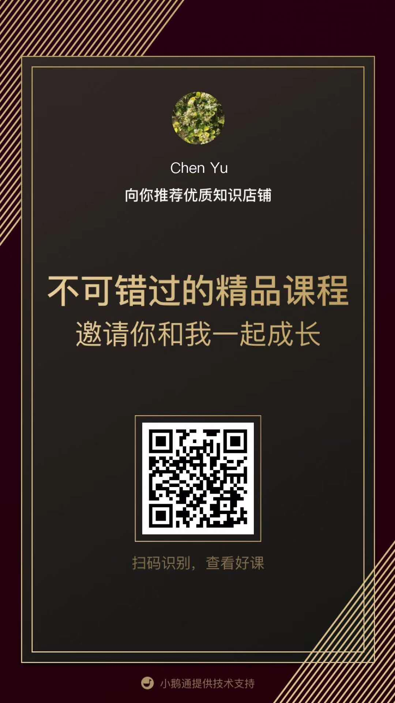
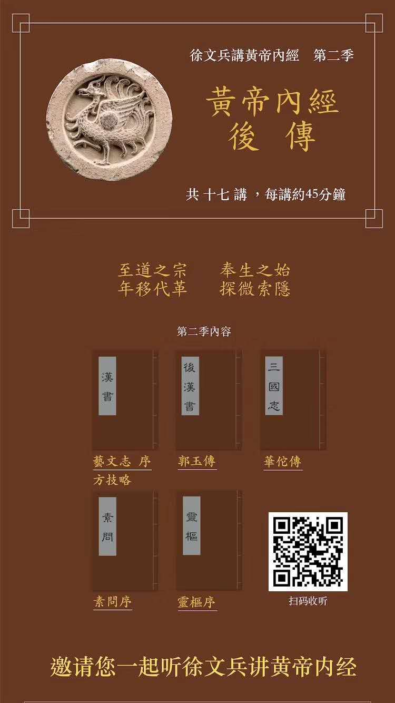

Along with the rise and fall of Chinese culture in the past 5000 years, Chinese medicine has also experienced its ups and downs all through the history.
Huangdi Nei Jing, is the earliest medical classics that we can trace back today with written records. It was originated from 4718 years ago, when Huangdi, the Yellow Empire, started ruling and leading the country. Then, its knowledge kept being accumulated and polished in the next 2000 years through Zhou Dynasty to Spring-Autumn and Warring state period, when Chinese culture flourished the most, and various philosophers and scholars, including Taoism and Confucianism rose. The Huangdi doctrine finally appeared in the form of publication in Western Han Dynasty. According to The History of the Han Dynasty, Huangdi Neijing contained eighteen volumes and Huangdi Waijing, thirty seven volumes.
In the reign of Emperor Wu of Western Han, a policy was enforced of abolishing all the other schools but remaining Confucianism monopoly. This started to lead the scholars and civilians narrowing mindset. Many doctrines and records in Huangdi Neijing were lost.
The Chinese culture embraced its revival in Tang Dynasty, when scholars started to resort and study Huangdi Neijing, re-published the classics in the form of dialogues, with two parts we know well today: SuWen and LingShu.
In the following years from Yuan, Ming and Qing dynasty, Chinese medicine scholars placed focus on technics in acupuncture and herbal medicine, in a more practical way to treat mass population, but have been challenged and finally declined in the recent 100 years.
Outside of China, Japan and Korea, as the nonboring countries, have been deeply affected by Chinese traditional cultures and medicine. Korean medicine and Japanese Kampo have developed into its unique systems. Far in Europe, Marco Polo mentioned Chinese medicine repeatedly in his letters, but Chinese medicine were not got much recognition in western countries until recent 50 years.Today Chinese medicine has been taken as a complementary or alternative therapy to the mainstream healthcare.
As the foundation and origin of Chinese medicine, Huangdi Neijing has been always cited and reused by all the later Chinese medicine literatures, which is no matter related with herbal medicine or acupuncture and moxibustion theories. How Huangdi Neijing enjoys such a big reputation is not only because it has long history, but also, and more important, it's quite inclusive. Compared with the later classics, Huangdi Neijing gives the wide coverage of the relationships between nature and human, for example, how the four, five or six seasons impact human's health. Also, it looks into the relationships between society and individuals, taking Yin-Yang 25 personalities for example. What makes Huangdi Neijing unique is that it explores and discusses metaphysical topics, which is intangible, but can be felt, sensed and even proved by human, the beauty of the world, the paragon of animals . It touches the concepts and theories of Qi all through the publication, taking Qi as the linkage between the inner organs and channels. In such a way, Huangdi Neijing established that Chinese medicine is a study of holism, of balancing between complex relationships inside and outside the human body.
Shanghan Za Bin Lun is another Chinese classics that is valued and explored until modern times. It faithfully inherited the theory of five yun and six qi in Huangdi Neijing, and divided human diseases into epidemics with infection, individual cases caused by external factors, non-infectious, and diseases caused by bad lifestyle. The items of medicine formula in this classics are the summary how Chinese medicine remedied the large population threatened by epidemics widely spread in late East Han dynasty.
Huangdi Neijing Ling Shu is previously or alternatively called Zhen Jing (needle classics), which is the first publication elaborating acupuncture and channel pathway. Zhenjiu Jiayi Jing published after late Donghan dynasty, is the first dedicated classics in acupuncture, in which the location and function of all the 349 acupuncture points are clarified, and meanwhile, the notion of Qi and holism in Huangdi Neijing is well inherited and kept. The classics believes Qi that communicates between Yin and Yang is the origin of life, and each of the five solid organs has its own counterpart in the five seasons, five colors, five tastes, and five tone scales.
One thousand years later in Ming dynasty, Zhen Jiu Da Cheng, another acupuncture classics was published. It collects the past clinical cases and summarized the experiences. Different from the previous classics, Zhen Jiu Dacheng innovate lyrics with rhythm for channels and points to facilitate memory. It emphasized the Jing (well) points, and named them into "Shi Xuan Xue", ten points at the end of figures and toes. Also, it's the first time in the publications to detail the eight methods of needle manipulation for tonifying or reducing Qi.
Looking back into the history and the classics of Chinese medicine, we can conclude that Chinese medicine is more than a study of personal human body's health, but a matter of culture's life and death, nations'prosperity and decline. When a dynasty developed into its flourishing stage, the theory and publications were more tolerant and open-minded, taking Huangdi Nei Jing in Western Han dynasty and Tang dynasty for example. When the dynasty went into it's trough stage, Chinese medicine survived in civilians, although the official agencies decayed. For example, in the last thirty years of Eastern Han dynasty, totally twelve epidemics swept the whole country, averagely once every two to three years, in which the worst one was called "Shanghan Bin (Cold disease) " and approximately 20 million people lost their life. That was also the time when the classics Shanghan Za Bin Lun formed, and its author, Zhang Zhongjing, wrote in its preface that 2/3 of the its family, more than 100 people in his family died of Shanghan, the epidemic, during the ten years, which motivated Zhang Zhongjing to write down the book of Shang Han Za Bin Lun. Another example can be found in late Ming dynasty, when a plague prevailed across the country which killed millions of thousands of life and directly weakened the emperor's reign and control, leading Ming dynasty conquered by foreign invasion.This was also the start of Chinese medicine declining.
Today, when people continue to be threatened by epidemics, we cannot but review how the antient people survived, and how Chinese medicine classics and its prestigious practitioners emerged and succeeded. Chinese medicine is not only a kind of chemist, a pharmacy, or a pill that can kill the virus, but it's a methodology of adjusting and balancing the inner and outer environment that have been deviated. Chinese medicine stands for the strong history culture, and it reflects Chinese philosophy of treating the world and universe.
 